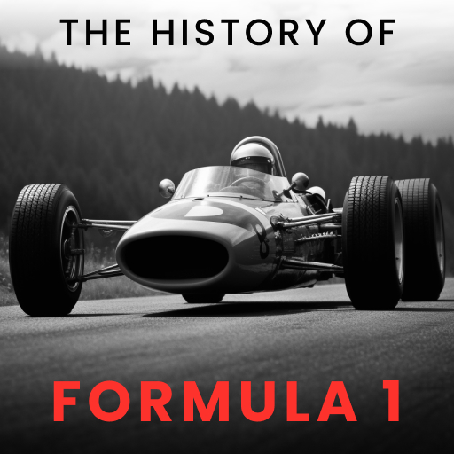

Formula 1
Formula 1 is the highest class of international racing for open-wheel single-seater formula racing cars sanctioned by the Fédération Internationale de l'Automobile (FIA). The World Drivers' Championship, which became the FIA Formula One World Championship in 1981, has been one of the premier forms of racing around the world since its inaugural season in 1950. The word formula in the name refers to the set of rules to which all participants' cars must conform. A Formula One season consists of a series of races, known as Grands Prix, which take place worldwide on both purpose-built circuits and closed public roads.

The history of Formula 1 is a fascinating journey of technological innovation, incredible competitions and heroic victories. It all started in the middle of the 20th ....
Formula 1 teams are elite racing teams, competing for victories. Mercedes, Ferrari, Red Bull are leaders investing millions in development and innovation. Riders such as Lewis Hamilton and Max Verstappen lead their teams to thrilling competitions on the world's most prestigious circuits.
Formula 1 drivers are the elite of motorsport. Lewis Hamilton, a seven-time champion, surprises with his speed and active role in environmental initiatives. Max Verstappen, a young talent, represents Red Bull Racing, impressing with an aggressive chasing style. Charles Leclerc, from Ferrari, impresses with its precision and ingenuity.

In 2024, Formula 1 continues to captivate spectators with its races on the defining tracks. The close battle between Mercedes, Ferrari and Red Bull creates a tense atmosphere.